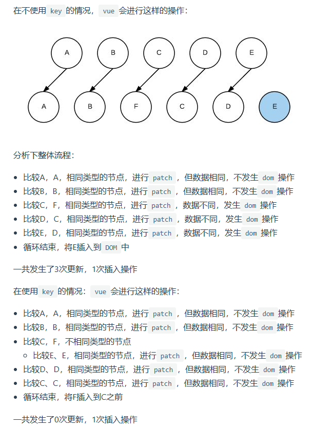
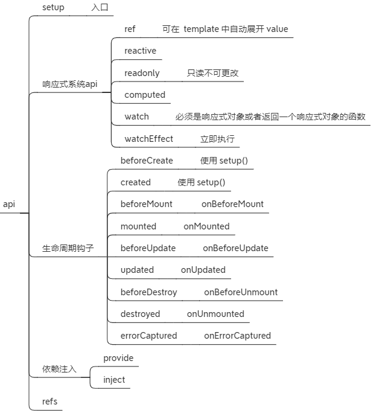

# vue 的理解
- 是一个用于创建用户界面的开源 JavaScript 框架，也是一个创建单页应用的 Web 应用框架
- 核心特性
- 数据驱动（MVVM）
MVVM 表示的是 Model-View-ViewModel
- Model: 模型层，负责处理业务逻辑以及和服务端进行交互
- View: 视图层，负责将数据模型转化为 ui 展示
- ViewModel: 视图模型层用来连接
Model和View，是Model和View的连接桥梁
- 组件化开发每个
.vue文件都可以视为一个组件
# vue 和 react 区别
- 相同点
- 都是组件化
- 都支持服务器渲染
- 都有 Virtual DOM
- 数据驱动视图
- 不同点
- 数据流向不同
- react 推崇单向数据流
- vue 是双向数据流
- 数据变化的实现原理不同
- react 使用的是不可变数据
- vue 使用的是可变的数据
- 组件化通信不同
- react 通过回调函数进行通信
- vue 通过事件和回调函数
- 数据流向不同
# 你对 SPA 的理解
- SPA 单页面应该通过动态重写当前页面来与用户交互，避免页面之间切换打断用户体验
# 单页面与多页面的区别
| 单页面 (SPA) | 多页面 (MPA) | |
|---|---|---|
| 组成 | 一个主页面和多个页面片段 | 多个主页面 |
| 刷新模式 | 局部刷新 | 整页刷新 |
| url 模式 | 哈希模式 | 历史模式 |
| SEO 搜索引擎优化 | 难实现，可以使用 ssr 方式改善 | 容易实现 |
| 数据传递 | 容易 | 通过 url，cookie，localStorage 等传递 |
| 页面切换 | 速度快，用户体验好 | 切换加载资源，速度慢，用户体验较差 |
| 维护成本 | 相对容易 | 相对复杂 |
# 单页面优缺点
- 优点：
- 有桌面应用的即时性，网站的可移植性和可访问性
- 用户体验好，内容切换不需要重新加载整个页面
- 良好的前后端分离，分工更明确
- 缺点：
- 不利于 SEO
- 首次渲染速度相对较慢
# 如果给 SPA 做 SEO
- SSR 服务端渲染：将组件或页面通过服务器生成 HTML, 在返回给浏览器，如：nuxt.js
- 使用 Phantomjs 针对爬虫处理：原理是通过 nginx 配置，判断访问来源是否为爬虫，如果是则搜索引擎的爬虫请求会转发到一个 node server，再通过 PhantomJS 来解析完整的 HTML，返回给爬虫。
# SPA 首屏如何优化
- 减小入口文件体积
- 在路由配置的时候采用动态加载的形式
- 静态资源本地缓存
- 后端返回资源：
- 采用 http 缓存，设置 Cache-Control, last-Modified, Etag 等响应头
- 采用 Service Worker 离线缓存
- 前端合理利用 localStorage
- 后端返回资源：
- UI 框架按需加载
- 图片资源的压缩
- 对页面上图片资源进行适当压缩，对页面上 icon 可以使用线字体图标，或者雪碧图
- 组件重复打包
- 开启 GZip 压缩
- 拆完包之后，我们再用 gzip 做一下压缩 安装 compression-webpack-plugin
- 使用 SSR
- 组件或页面通过服务器生成 html 字符串，再发送到浏览器

- 组件或页面通过服务器生成 html 字符串，再发送到浏览器

# v-show 与 v-if 的区别
- 控制手段：
- v-if 显示隐藏是将 dom 元素整个添加或者删除
- v-show 通过 css 属性 display 控制，dom 一直存在
- 编译过程：
- v-if 切换有一个局部编译 / 卸载的过程，切换过程中合适地销毁和重建内部的事件监听和子组件
- v-show 简单的基于 css 切换
- 编译条件:
- v-if 切换会触发组件的生命周期
- v-show 不会触发
- 性能消耗:
- v-if 更高的切换消耗
- v-show 更高的初始化渲染消耗
# Vue 实例挂载的过程中发生了什么
- new Vue 的时候调用_init 方法
- 定义 $set, $get, $delete, $watch 等方法
- 定义 $on, $off, $emit, $off 等事件
- 定义_update, $forceUpdate, $destroy 生命周期
- 调用 $mount 进行页面的挂载
- 挂载的时候通过 mountComponent 方法
- 定义 updateComponent 更新函数
- 执行 render 生成虚拟 DOM
- _update 将虚拟 DOM 生成真是 DOM 结果，并且渲染到页面中
# Vue 生命周期有哪些
| 声明周期 | 描述 |
|---|---|
| beforeCreate | 组件实例被创建之初 |
| created | 组件实例已经完全创建 |
| beforeMount | 组件挂载之前 |
| mounted | 组件挂载实例完成 |
| beforeUpdate | 组件数据发生变化，更新之前 |
| update | 组件数据更新之后 |
| beforeDestroy | 组件实例销毁之前 |
| destroyed | 组件实例销毁之后 |
| activated | keep-alive 缓存的组件激活时 |
| deactivated | keep-alive 缓存的组件停用时调用 |
| errorCaptured | 捕获一个来自子孙组件的错误时被调用 |
# v-if 和 v-for 谁的优先级高？为什么不建议同时使用
- v-for 优先级比 v-if 高
- v-if 和 v-for 同时在一个元素上使用会带来性能方面的浪费，每次渲染都会先循环在进行条件判断
- 如果条件出现在循环内部，可以通过 computed 提前过滤掉那些不需要显示的项
# Vue data 属性是一个函数而不是对象
- 根实例对象 data 可以是对象也可以是函数（根实例是单例），不会产生数据污染情况
- 组件实例对象 data 必须为函数，目的是为了防止多个组件实例对象之间共用一个 data，产生数据污染
# Vue 中给对象添加新属性页面不刷新？
使用 Vue.set ()
使用 $forceUpdate ()
Object.assign()
使用
...this.item = {...this.item, newData: '1'}
# Vue 组件之间的通讯
- 父子关系的组件数据传递选择
props与$emit进行传递，也可选择ref - 兄弟关系的组件数据传递可选择
$bus，其次可以选择$parent或者$root进行传递 - 祖先与后代组件数据传递可选择
attrs与listeners或者Provide与Inject - 复杂关系的组件数据传递可以通过
vuex存放共享的变量 - 可以使用
Vue.observable进行通信
# Vue 中 nextTick 是什么
- 在下次 DOM 更新循环结束之后执行延迟回调。在修改数据之后立即使用这个方法，获取更新后的 DOM
# Vue 中 mixin 是什么
- mixin（混入），提供了一种非常灵活的方式，来分发 Vue 组件中的可复用功能。
# Vue 中 slot 是什么
- slot 一个组件内占位符，可以让用户扩展组件，去更好的复用组件对其做定制化处理
# Vue 中 key 的理解
- key 是什么
- key 是给每一个 vnode 的唯一 id，也是 diff 的一种优化策略，可以根据 key，更准确， 更快的找到对应的 vnode 节点
- 设置 key 与不设置 key 区别
- 不设置 key 会进行多次更新
- 设置 key 能够大大减少对页面的 DOM 操作，提高了 diff 效率

# Vue 中 keep-alive
- keep-avlie 是 vue 内置组件，能在组件切换的时候把状态保存在内存中，防止重复渲染 dom
- 属性
include字符串或正则表达式。只有名称匹配的组件会被缓存exclude字符串或正则表达式。任何名称匹配的组件都不会被缓存max数字。最多可以缓存多少组件实例
# Vue 修饰符
- 修饰符是用于限定类型以及类型成员的声明的一种符号
- vue 中修饰符分类
- 表单修饰符
- lazy
- trim
- number
- 事件修饰符
- stop
- prevent
- self
- once
- capture
- passive
- native
- 鼠标按键修饰符
- left
- right
- middle
- 键值修饰符
- enter
- tab
- ctrl
- alt
- ...
- v-bind 修饰符
- async
- prop
- camel
- 表单修饰符
# Vue 项目中如何解决跨越
- Proxy (*)
- vue.config.js 中配置
- 通过 nginx 配置
- CORS
- 后端实现
- JSONP（次要）
# Vue 项目中如何处理错误
后端接口报错
- 通过 axios 的 interceptor 实现网络请求的 response 先进行一层拦截
代码逻辑错误
- 设置全局错误处理函数
Vue.config.errorHandler = function() {}
- 通过生命周期钩子
errorCaptured(err: Error, vm: Component, info: string) {
}
# Vue2 与 Vue3 有哪些变化
- 速度更快
- 重写了虚拟 Dom 实现
- 编译模板的优化
- 更高效的组件初始化
- 体积减少
- 通过 webpack 的 tree-shaking 功能，可以将无用模块 “剪辑”，仅打包需要的能够 tree-shaking
- 容易维护
- 使用 compositon Api 灵活的逻辑组合与复用
- 更好的 ts 支持
# Vue3 新增特性
- framents
- 支持多个根节点
- Teleport
- composition Api
- createRenderer

# 摘抄来源
web 前端面试 - 面试官系列